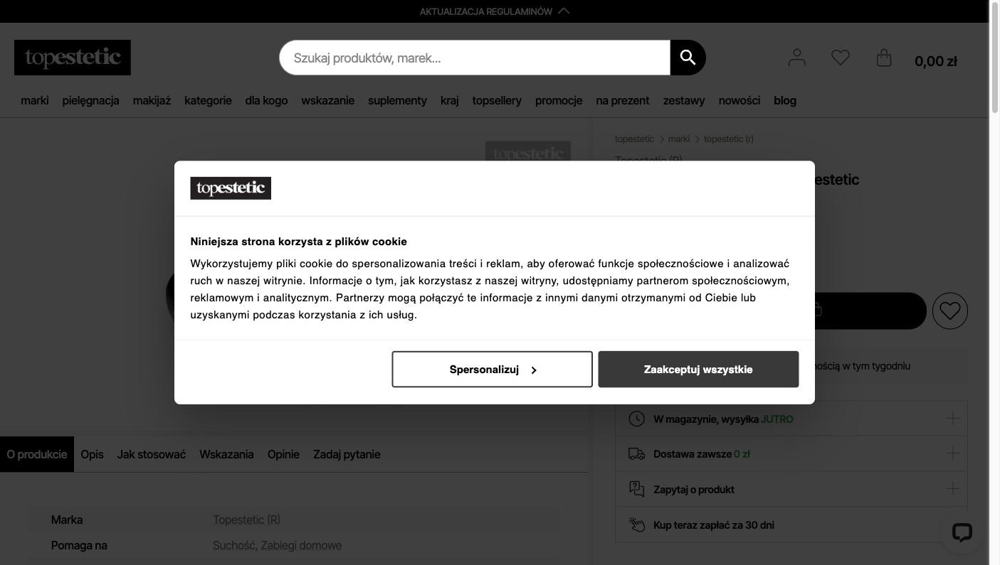

6 kolorów: light blue, gold, rose red, silver, black, sky blue
Parametry: 11×7×2,5 cm · plastik · EAN
3. Claimy / dowód verbatim
„Bezbolesny depilator do ciała wykorzystuje technologię nano szkła"
„usuwa martwy naskórek warstwa po warstwie"
„zminimalizuje ryzyko wrastania włosków" zero certyfikatówzero recenzji
4. FAQ
BRAK
5. Obszar ciała
nogi, twarz, ramiona, klatka, plecy — przewaga nad GLOV — 5 obszarów vs „ręce i nogi"
6. Cena / wartość
34,99 zł — 5 zł taniej niż GLOV · wielorazowy · brak ROI kalkulacji
7. Trust / recenzje
0 recenzji · OOS · 4 osoby kupiły (Gadżetarnia) — najsłabszy trust w kategorii
Recenzje Malowidło (verbatim)
Brak recenzji na stronie. Produkt chwilowo niedostępny (OOS).
Visual mapping PDP
6 wariantów kolorystycznychzbliżenia powierzchnibrak użycia na ciele
Wniosek Malowidło: GLOV wygrywa social proof (63 vs 0 recenzji) i dostępnością. Malowidło ma lepszą listę obszarów ciała — to konkretna luka PDP do zamknięcia przez GLOV. OOS = brak realnej presji konkurencyjnej dziś, ale może wrócić.
✓ Dostępny vs LadyMakeup OOS ✓ PDP po polsku vs angielski ✓ 63 recenzje vs 1 recenzja ✓ Brand trust: Trusted Shops 4.73, Allegro 4.63★ ✗ Oba mają negatywy o podrażnieniu — wspólny pain point klasy nano LadyMakeup 3× tańszy gdy dostępny (15,90 vs 39,90 zł)
4. FAQ
BRAK
Recenzje GLOV
„Skóra jest gładka na dużo dłużej niż po maszynce."
— Barbara, 5★
„Skóra na moich rękach przez wiele dni była szorstka i podrażniona."
„Painless Full Body Epilator" — angielski! Brak polskiego opisu
2. Opis / struktura
Minimalistyczny, EN. Dual-benefit: „removes hair as well as dead skin — as after peeling"
3. Claimy / dowód verbatim
„removes hair as well as dead skin — as after peeling"
„reusable product" PDP angielskizero certyfikatówbrak liczb
4. FAQ
BRAK
5. Obszar ciała
„full body" — EN, brak szczegółów
6. Cena / wartość
15,90 zł — 3× tańszy od GLOV gdy dostępny · white-label brak brand trust
7. Trust / recenzje
4.0★ (1 rec.) · OOS · 1M+ klientów platformy ale nie produktu
Recenzje LadyMakeup (verbatim)
„Feels like scrubbing your body with sandpaper" (jakby trzeć ciało papierem ściernym)
— jedyna recenzja, 4★
Pain point identyczny co GLOV neg — podrażnienie jest pain pointem całej klasy nano glass.
Visual mapping PDP
liliowy produktbasic packshotbrak zdjęć użycia
Wniosek LadyMakeup: GLOV wygrywa na każdym froncie (język, dostępność, recenzje, brand trust). Zagrożenie jedynie ceną (15,90 zł) gdy produkt dostępny — i wspólnym pain pointem podrażnienia w kategorii nano.
✓ Własna marka z historią (Monika Żochowska) — nie white-label ✓ Trusted Shops, Allegro, własny sklep — pełna dystrybucja ✓ 63 recenzje — walidacja produktu nd. — brak danych PDP TopEstetic do porównania
Recenzje GLOV
„Skóra jest gładka na dużo dłużej niż po maszynce."
— Barbara, 5★
„Po pierwszej próbie skóra na moich rękach przez wiele dni była szorstka i podrażniona."
— Katarzyna, 1★
TopEstetic — nano glass (brak PDP)

TopEstetic Nano Glass Depilator
nd.
nd. — strona PDP niedostępna / brak scrape
topestetic.pl
1. Tytuł PDP
nd. — brak dostępu do PDP
2. Opis / struktura
nd.
3. Claimy / dowód
nd.
4. FAQ
nd.
5. Obszar ciała
nd.
6. Cena / wartość
nd.
7. Trust / recenzje
nd.
Recenzje TopEstetic
Brak danych — PDP niedostępne w scrape. Do uzupełnienia przy kolejnym researchu.
Visual mapping PDP
nd. — brak scrape
⚠️ TopEstetic — brak PDP data. Produkt istnieje (obraz potwierdzony), ale scrape topestetic.pl nie zwrócił PDP nano glass. Uzupełnić przy następnym research rundzie.
GLOV — Depilator z Nano Szkła (bohater)
GLOV Depilator z Nano Szkła
39,90 zł vs 57,99 zł Veet
4.7★ (63 rec.) · wielorazowy na lata · zero chemii
✓ Tańszy jednorazowo (39,90 vs 57,99 zł) ✓ Wielorazowy — Veet co miesiąc 58 zł × 12 = 696 zł/rok ✓ Zero chemii · zero zapachu · zero baterii ✓ Bez ryzyka podrażnień chemicznych ✗ Brak konkretnego czasu zabiegu (Veet: „od 2 minut") ✗ Brak badania dermatologicznego (Veet: testowany klinicznie) brak liczb efektubrak badania derm.
4. FAQ
BRAK
Recenzje GLOV
„Skóra jest gładka na dużo dłużej niż po maszynce. Jestem pozytywnie zaskoczona."
— Barbara, 5★
„Po pierwszej próbie skóra na moich rękach przez wiele dni była szorstka i podrażniona."
Wniosek Veet: Veet jest benchmarkiem komunikacji liczb. GLOV powinien dodać „X minut zabiegu" i „Y tygodni efektu" na wzór Veeta. ROI argument (39,90 zł × 1 vs 57,99 zł × 12 = 696 zł) to niezagospodarowana szansa PDP.
GLOV — Depilator z Nano Szkła (bohater)
GLOV Depilator z Nano Szkła
39,90 zł vs 479 zł Braun — 12× taniej
4.7★ (63 rec.) · bezbolesny · zero ładowania · zero kabli
✓ 12× taniej (39,90 vs 479 zł) ✓ Bezbolesny — Braun boli (wszystkie recenzje potwierdzają) ✓ Zero ładowania · zero kabli · portabilny ✓ Brak ryzyka wrastania włosów (Braun ma ten problem) ✗ Braun: „do miesiąca gładkości" — GLOV nie ma liczby efektu ✗ Braun działa szybciej na większe powierzchnie brak obietnicy czasu efektu — Braun wygrywa komunikacyjnie
4. FAQ
BRAK
Recenzje GLOV
„Skóra jest gładka na dużo dłużej niż po maszynce."
— Barbara, 5★
„Mocniejsze pocieranie sprawiło, że skóra była bardzo podrażniona, zaczerwieniona przez dwa dni."
„Do miesiąca gładkiej skóry" — najlepsza obietnica efektu w kategorii „40 pęset MicroGrip" — konkretna liczba „do 0,5 mm włosków" — parametr techniczny „50 minut na akumulatorze" — konkretna liczba Smart Lightmokro i suchoboli — potwierdzone recenzjami
4. FAQ
BRAK
5. Obszar ciała
całe ciało — pełna lista
6. Cena / wartość
479 zł · premium · jednorazowa inwestycja (wymienne głowice) · brak ROI vs GLOV
7. Trust / recenzje
4.8★ (104 rec. Wizaz) — najsilniejszy trust przez recenzje beauty
Recenzje Braun (verbatim)
„Najlepszy depilator, jaki miałam – skuteczny i nie aż tak bolesny jak się spodziewałam!"
— Good7x, 5★ Wizaz
„Pierwsze użycie i WOW nie bolało aż tak jak się spodziewałam."
— Natalusia0508, 5★ Wizaz
„Dramat. Nie wyrywa włosów tylko je obcina. Najgorszy depilator jaki miałam."
Wniosek Braun: Braun jest benchmarkiem liczb w kategorii. „Do miesiąca gładkości", „40 pęset", „0,5 mm" — GLOV powinien skopiować ten format komunikacji liczb. Ból = kluczowy wyróżnik GLOV, ale nigdzie nie jest zestawiony wprost z Braunem na PDP.
Matryca porównawcza — wszystkie marki naraz
Wymiar
GLOV Nano Glass ★
Malowidło
LadyMakeup
TopEstetic
Veet Prof.
Braun Silk·9
Cena
39,90 zł
34,99 zł
15,90 zł (OOS)
nd.
57,99 zł
479 zł
Ocena ★
4.7★ (63)
—(0)
4.0★(1)
nd.
4.6★(37)
4.8★(104)
Język PDP
PL
PL
EN!
nd.
PL
PL
Styl komunikacji
korzyść+eko, brak liczb
CAPS, keyword-stuffing
EN minimalistyczny
nd.
2 min · 48h — benchmark
40 pęset · 0,5 mm · 1 mies. ← #1
Lista obszarów ciała
„ręce i nogi" — brak
5 obszarów
„full body" (EN)
nd.
4 obszary
całe ciało
FAQ na PDP
BRAK
BRAK
BRAK
nd.
BRAK
BRAK
Liczba / obietnica efektu
brak
brak
brak
nd.
2 min · 48h nawilżenie
do 1 miesiąca
Wielorazowy
TAK · zero baterii
TAK
TAK
nd.
NIE — jednorazowy
TAK (bateria)
Badanie kliniczne
brak
brak
brak
nd.
testowany derm.
brand trust 100+ lat
Dostępność
✓ dostępny
OOS
OOS
nd.
✓
✓
Luki rynkowe P0 / P1 / P2
P0 Żaden z 5 graczy nie ma FAQ
0 z 5 rywali ma sekcję FAQ na PDP. Kto doda FAQ + FAQPage schema JSON-LD — wygrywa AI Overview dla kategorii „czy depilator nano boli", „jak długo efekt" itp.
Braun: „do miesiąca". Veet: „od 2 minut". GLOV: nic. Shopper pyta AI — AI odpowie Braunem i Veetem, nie GLOV.
✅ Pierwsze zdanie po H1: „Efekt gładkości X–Y tygodni przy regularnym stosowaniu." Recenzje mówią „dłużej niż maszynka" — zamień w liczbę.
P0 Brak listy obszarów ciała na PDP GLOV
Malowidło: 5 obszarów. Veet: 4 obszary. GLOV: „ręce i nogi". Shopper szuka „czy GLOV na pachy, bikini, plecy" — PDP nie odpowiada.
✅ Bullety „Działa na: nogi, ręce, pachy, linię bikini, plecy" · 15 min pracy · ROI: +SEO na long-tail per obszar
P1 Podrażnienie = pain point kategorii — nikt nie adresuje
GLOV i LadyMakeup — identyczny wzorzec negatywny w recenzjach: „szorstka skóra", „podrażnienie". Żaden gracz nie tłumaczy jak używać poprawnie.
✅ Sekcja „Jak stosować bez podrażnienia": delikatne okrężne ruchy, mokra skóra, 5–10 sek na obszar. Zamienia 1★ w 5★.
P1 ROI argument vs Veet niezagospodarowany
Veet 57,99 zł × 12 = 696 zł/rok. GLOV 39,90 zł × 1 = 39,90 zł na lata. 17× różnica. Nikt nie robi tej kalkulacji wprost na PDP.
✅ „Jeden GLOV (39,90 zł) wystarczy na lata. Krem do depilacji kupujesz co miesiąc za ~58 zł. Policz sama." · + eko argument = 0 śmieci plastikowych
P2 Styl Brauna — mów liczbami nie przymiotnikami
Braun: „40 pęset, 0,5 mm, 50 min". GLOV: „efektywny", „skuteczny" — puste słowa których AI nie cytuje jako fakty.
✅ „Usuwa owłosienie w 3–5 minut na nogi. Efekt gładkości 2–3 tygodnie. Zero ostrzy, zero kabli, zero bólu." Format: liczba + unit + efekt.
Strategia odpowiedzi GLOV
1. Na Brauna: „Miesiąc gładkości? My też — bez bólu i za 40 zł." Braun komunikuje „miesiąc gładkości" — GLOV milczy. Recenzje mówią „dłużej niż po maszynce". To musi być na PDP jako liczba. "Efekt gładkości utrzymuje się 2–3 tygodnie przy regularnym stosowaniu. Bez bólu elektrycznych pęset. Bez ładowania. Bez 479 zł."
2. Na Veeta: „Jednorazowy za 58 zł/mies vs wielorazowy za 40 zł raz." Veet droższy jednorazowo i odnawia się co miesiąc. 696 zł/rok to argument który nikt nie komunikuje na PDP. "Jeden GLOV wystarczy na lata. Krem do depilacji kupujesz co miesiąc. Policz sama: 39,90 zł vs 696 zł/rok."
3. Na negatywne recenzje (kategorii): edukacja protokołu użycia Podrażnienie = pain point GLOV i LadyMakeup jednakowo. Edukacja zamienia 1★ w 5★ — i to jest differentiator vs tańszych no-name nano. "Stosuj delikatnymi, okrężnymi ruchami na MOKREJ skórze. 5–10 sekund na obszar. Nigdy sucho, nigdy za mocno."
4. FAQ — autostrada GEO (0 z 5 graczy ma) Kto wejdzie pierwszy z FAQ + FAQPage JSON-LD wygrywa AI Overview dla całej kategorii. Pytania: Czy boli? Jak długo efekt? Na jakich częściach? Różnica vs krem/epilator? Dla wrażliwej skóry? 7–10 Q&A → FAQPage schema → AI Overview → 0 rywali tam jest dziś.
5. Kopiuj styl Brauna — mów liczbami Braun: 40 pęset, 0,5 mm, 50 min. GLOV: „efektywny", „skuteczny" — puste słowa. Format do wdrożenia: [liczba] + [unit] + [efekt]. "Usuwa owłosienie w 3–5 minut · efekt 2–3 tygodnie · działa od 0 mm odrostu · zero ostrzy · zero kabli."
Lista graczy — quick stats
#
Produkt
Typ
Cena
Ocena ★
Rec.
Wyróżnik
Słabość
★
GLOV Nano Glass
Nano glass
39,90 zł
4.7★
63
Najsilniejszy trust w nano · PL brand
Brak liczb, FAQ, listy obszarów
1
Malowidło
Nano glass
34,99 zł
—
0
5 obszarów ciała · 6 kolorów
0 recenzji · OOS
2
LadyMakeup
Nano glass
15,90 zł
4.0★
1
Najniższa cena w nano (gdy dostępny)
EN PDP · OOS · 1 recenzja
3
TopEstetic
Nano glass
nd.
nd.
nd.
nd. — brak scrape PDP
nd.
4
Veet Professional
Krem
57,99 zł
4.6★
37
Benchmark liczb (2 min · 48h) · derm. test
Jednorazowy · drogi · zapach
5
Braun Silk·épil 9
Elektryczny
479 zł
4.8★
104
Benchmark efektu (1 mies.) · 40 pęset
Boli · 12× droższy · ładowanie
Vision Reporty — skany wizualne PDP
Playwright capture 2026-08-06 · 5 konkurentów · desktop + mobile · pełna analiza elementów PDP